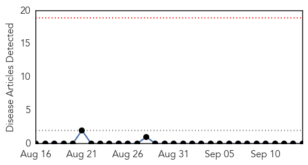
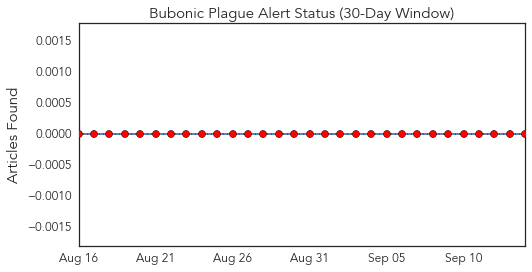
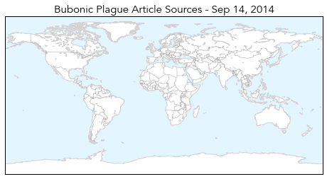
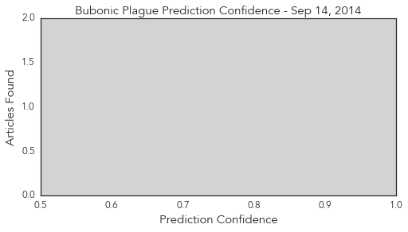

Bubonic Plague
30-Day Web Trend
0 alerts, 0 warnings

30-Day Twitter Trend
0 alerts, 0 warnings

Article Locations
Article Confidences
Top Articles:
-
No articles found for Sep 14, 2014
Top Tweets:
-
No tweets found for Sep 14, 2014
Measles
30-Day Web Trend
1 alerts, 0 warnings

30-Day Twitter Trend
0 alerts, 0 warnings

Article Locations

Article Confidences

Top Articles:
- 0.872
- Impact of measles infections in England revealed
- 0.860
- Harsh Vardhan assures J&K of help to prevent epidemics
- 0.859
- Harsh Vardhan assures Jamp;K of help to prevent epidemics
- 0.779
- Possible measles exposure at Seattle airport, health officials warn
- 0.749
- Harsh Vardhan's assurance to prevent epidemic in Kashmir
- 0.730
- Harsh Vardhan's assurance to prevent epidemic in Kashmir
- 0.727
- Harsh Vardhan's assurance to prevent epidemic in Kashmir
- 0.640
- Health officials warn of Sea-Tac measles exposure
- 0.573
- Health officials warn of Sea-Tac measles exposure
Top Tweets:
-
No tweets found for Sep 14, 2014